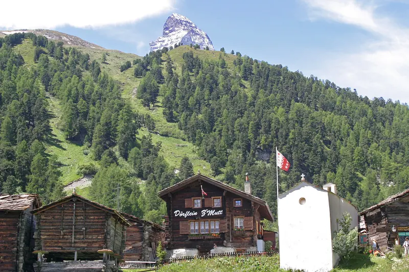

Vermieten · 6 Min. Lesezeit
Was bringt eine Ferienwohnung in der Schweiz wirklich ein?
Die ehrliche Antwort hängt vom Ort, von der Grösse und vom Inserat ab. Wir zeigen die Marktzahlen für 13 Schweizer Orte und rechnen ein Beispiel durch.

Zmutt oberhalb von Zermatt mit dem Matterhorn. Zermatt gehört zu den Orten mit den höchsten Nachtpreisen der Schweiz.
- Im Schweizer Schnitt sind Airbnb-Wohnungen zu 59 % ausgelastet und kosten CHF 199 pro Nacht.
- Grindelwald erreicht 72 % Auslastung, die Stadt Luzern 76 %.
- Der Durchschnittspreis täuscht. Grosse Chalets ziehen ihn hoch, eine typische Wohnung liegt deutlich darunter.
- Am gleichen Ort sind gute Inserate oft doppelt so viele Nächte gebucht wie schwache.
Die Zahlen pro Ort
Die Tabelle zeigt alle aktiven Airbnb-Inserate eines Ortes über 12 Monate, von November 2025 bis Oktober 2026.
Tabelle seitlich wischen →
| Ort | Inserate | Auslastung | Ø Nachtpreis | Typische Wohnung |
|---|---|---|---|---|
| Verbier (Val de Bagnes) | 762 | 54 % | CHF 401 | CHF 150 |
| Zermatt | 875 | 61 % | CHF 389 | CHF 253 |
| Lauterbrunnen, Wengen, Mürren | 535 | 65 % | CHF 343 | CHF 268 |
| Interlaken | 315 | 67 % | CHF 327 | CHF 251 |
| Grindelwald | 570 | 72 % | CHF 296 | CHF 206 |
| St. Moritz | 372 | 57 % | CHF 293 | CHF 149 |
| Stadt Luzern | 256 | 76 % | CHF 277 | CHF 219 |
| Davos | 607 | 54 % | CHF 237 | CHF 117 |
| Engelberg | 227 | 61 % | CHF 199 | CHF 150 |
| Zürich | 1'970 | 67 % | CHF 183 | CHF 124 |
| Genf | 704 | 68 % | CHF 149 | CHF 110 |
| Lugano | 567 | 64 % | CHF 145 | CHF 112 |
| Bern | 309 | 66 % | CHF 144 | CHF 117 |
«Typische Wohnung» ist der Median: Die Hälfte der Inserate am Ort verlangt mehr, die andere Hälfte weniger. In der ganzen Schweiz liegt die Auslastung bei 59 % und der Durchschnittspreis bei CHF 199, gerechnet über 36'276 Inserate.
Warum der Durchschnitt täuscht
In Grindelwald kostet eine Nacht im Durchschnitt CHF 296. Die typische Wohnung verlangt aber nur CHF 206. Der Grund sind grosse Chalets für acht oder zehn Personen, die den Durchschnitt nach oben ziehen. In Verbier ist der Abstand noch grösser: CHF 401 im Durchschnitt, CHF 150 im Median.
Wer eine 2-Zimmer-Wohnung besitzt, sollte deshalb mit dem Median rechnen und nicht mit dem Durchschnitt.
Der Ort entscheidet nicht allein
Am gleichen Ort liegen die Ergebnisse weit auseinander. In Grindelwald ist das schwächste Viertel der Inserate höchstens zu 38 % ausgelastet. Das stärkste Viertel erreicht 81 % und mehr. In Zermatt liegen die gleichen Werte bei 31 % und 75 %.
Den Unterschied machen Dinge, die Sie beeinflussen können: Fotos, Preise, die sich der Nachfrage anpassen, schnelle Antworten und gute Bewertungen.
Rechenbeispiel: 2-Zimmer-Wohnung in Grindelwald
| Nachtpreis im Jahresschnitt | CHF 205 |
| Auslastung 72 %, gebuchte Nächte | 263 |
| Umsatz pro Jahr | CHF 53'915 |
| Plattformgebühr 15,5 % | − CHF 8'357 |
| Bleibt nach Plattformgebühr | CHF 45'558 |
Wer selbst vermietet, behält diesen Betrag und macht die Arbeit selbst. Mit unserem Komplett-Paket (21 %) bleiben CHF 35'991 pro Jahr, also rund CHF 3'000 pro Monat. Die Reinigung deckt die Reinigungsgebühr, die der Gast zusätzlich bezahlt.
Was Sie vom Ertrag noch abziehen müssen
- Nebenkosten: Heizung, Strom, Wasser, Internet
- Versicherungen und Unterhalt der Wohnung
- Verbrauchsmaterial wie Kaffee, Seife und WC-Papier
- Steuern auf den Mieteinnahmen
- Hypothekarzinsen, falls vorhanden
Mehr dazu lesen Sie in den Artikeln zu Steuern und zur Kurtaxe.
So schätzen Sie Ihre eigene Wohnung ein
Unser Ertragsrechner rechnet mit den Marktdaten von 24 Orten und passt den Nachtpreis der Wohnungsgrösse an. Für eine genaue Zahl schauen wir uns Ihre Wohnung kostenlos an. Eine Ertragsgarantie geben wir nicht, weil sie niemand seriös geben kann.
Häufige Fragen
Wie hoch ist die Auslastung von Airbnb-Wohnungen in der Schweiz?
Im Durchschnitt 59 %, gerechnet über alle aktiven Inserate von November 2025 bis Oktober 2026. In Grindelwald sind es 72 %, in der Stadt Luzern 76 %, in Davos 54 %.
Wie viele Nächte ist eine Ferienwohnung in Grindelwald pro Jahr gebucht?
Bei der durchschnittlichen Auslastung von 72 % sind es rund 263 Nächte. Das schwächste Viertel der Inserate erreicht höchstens 38 %, das stärkste Viertel mindestens 81 %.
Mit welchem Nachtpreis soll ich rechnen?
Mit dem Median Ihres Ortes, nicht mit dem Durchschnitt. Grosse Chalets ziehen den Durchschnitt hoch. In Grindelwald liegt der Median bei CHF 206, der Durchschnitt bei CHF 296.